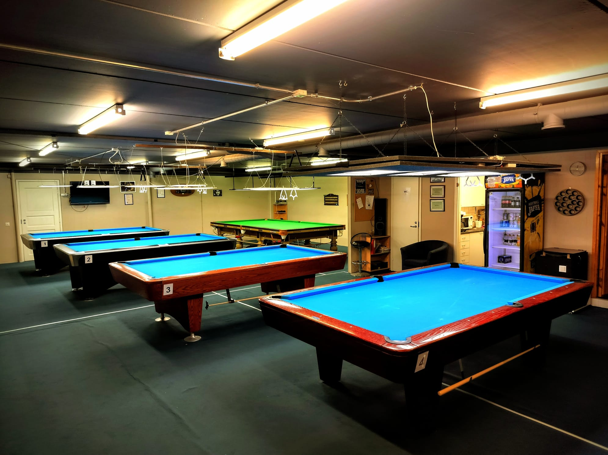
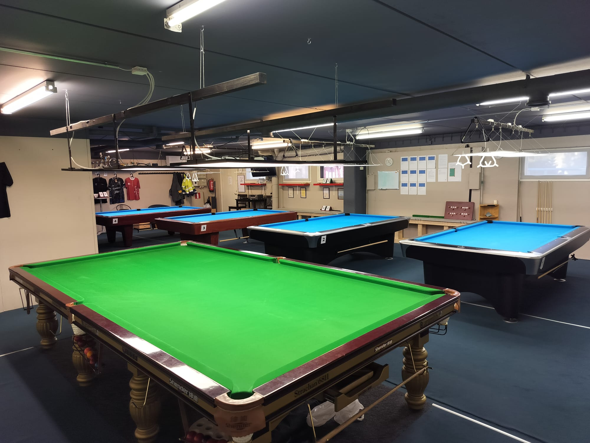
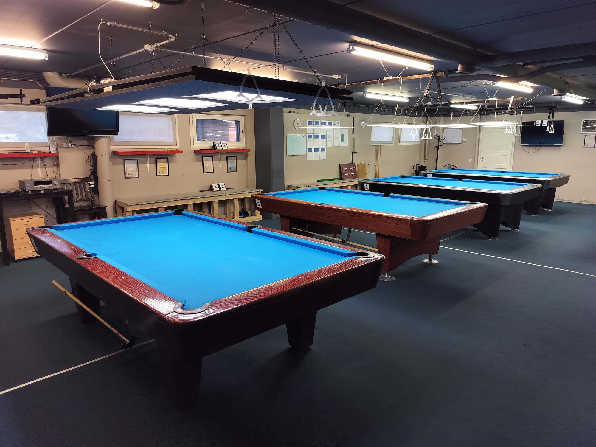
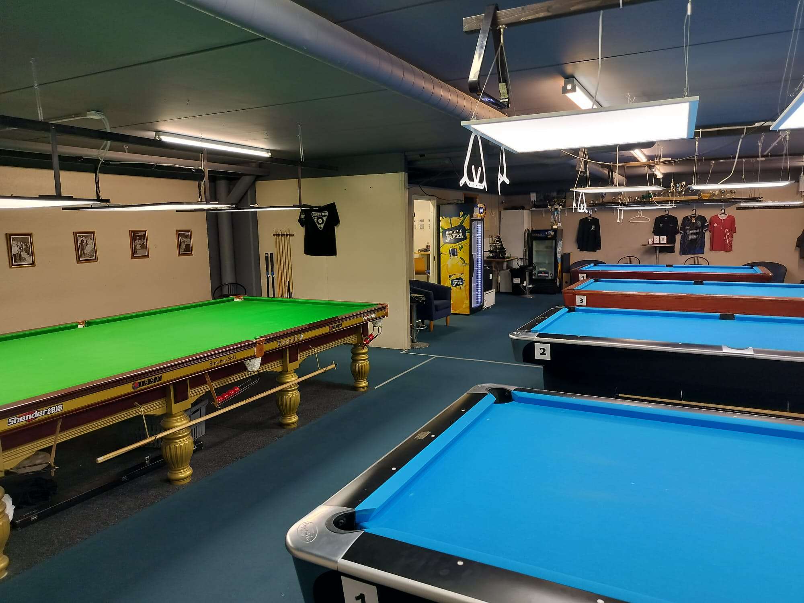
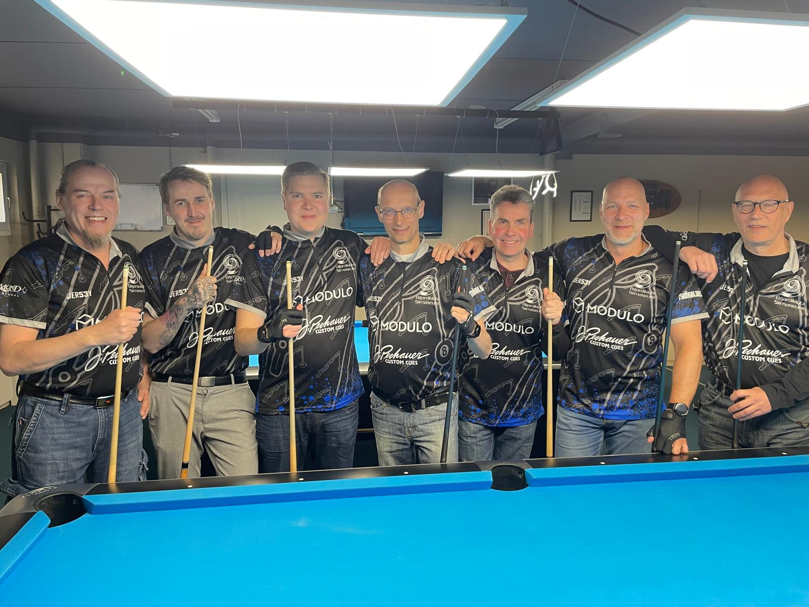
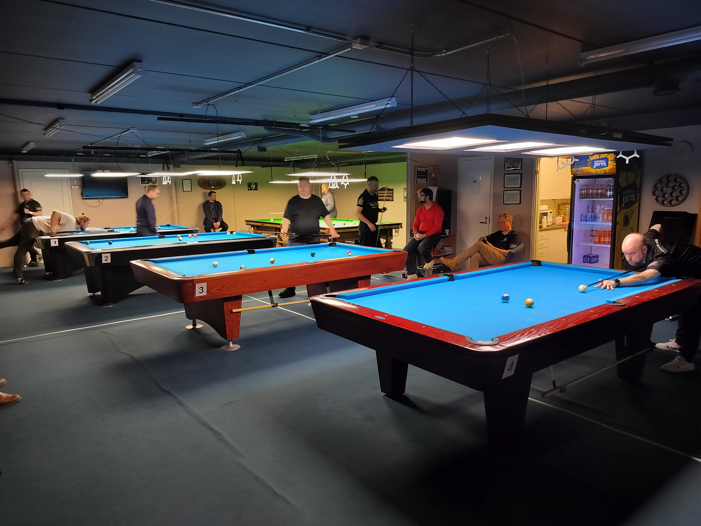
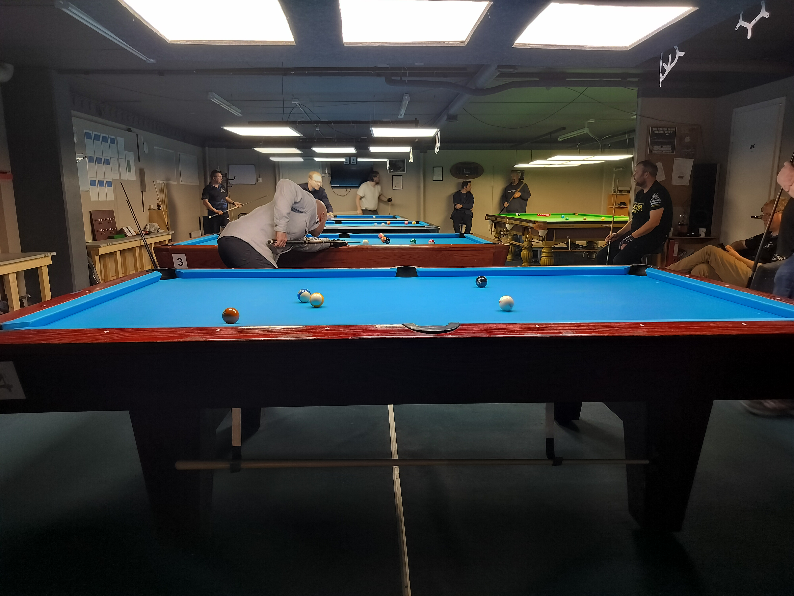
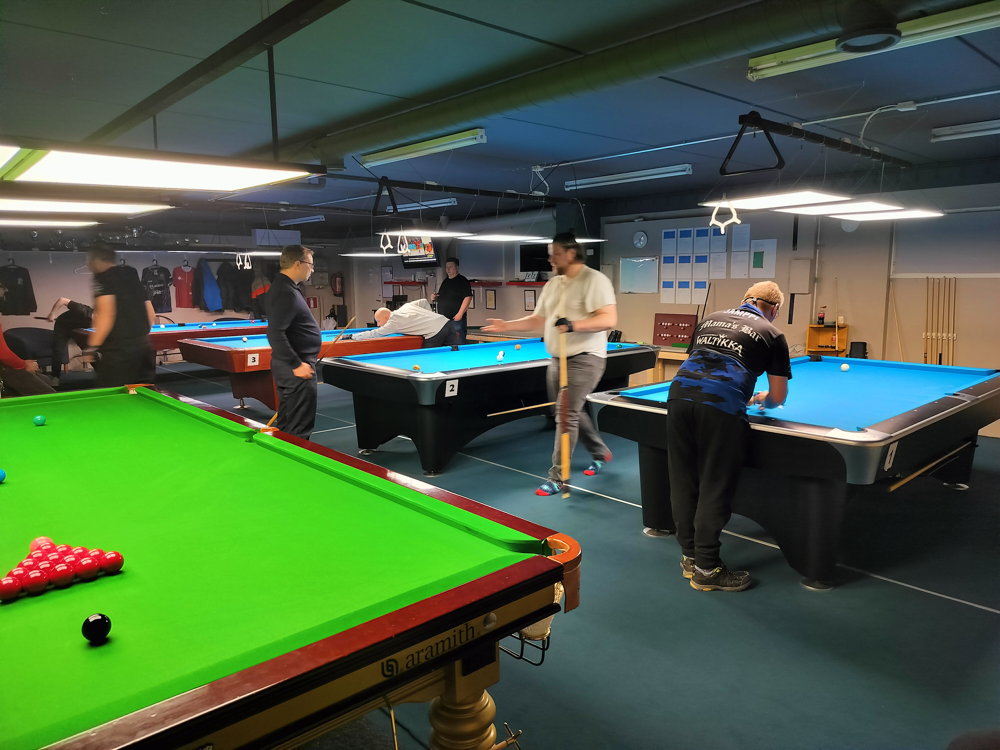
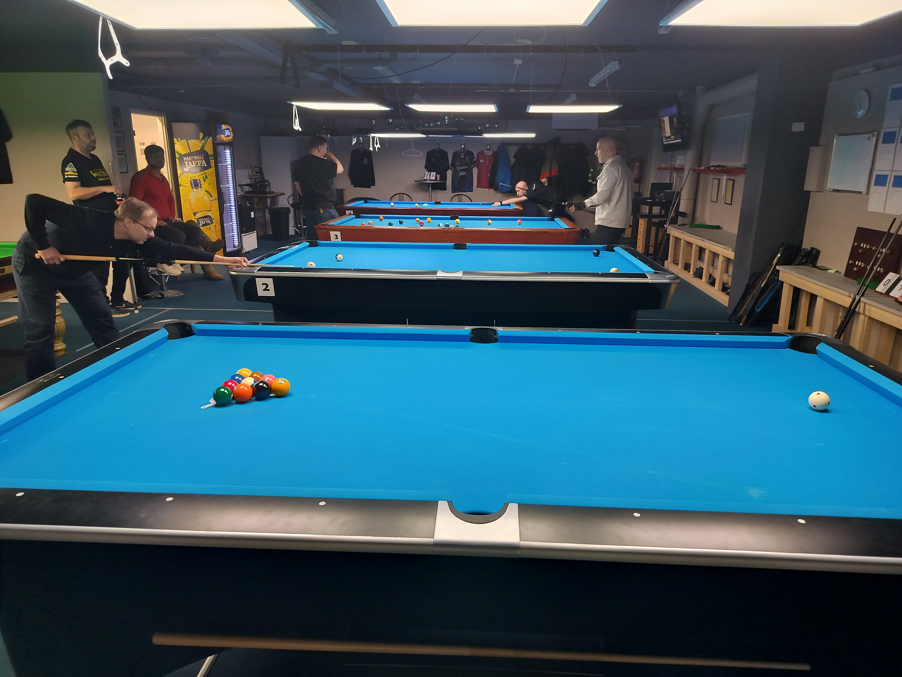
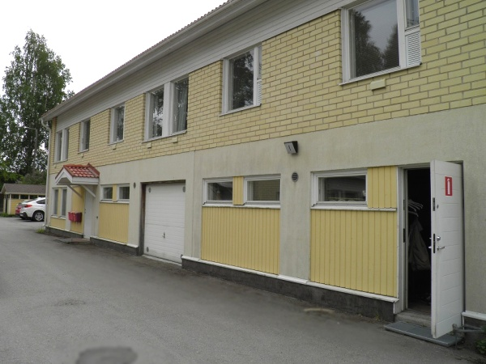

Yleistä Siimaseurasta
Biljardiklubi Siimaseura ry on Tampereen Lamminpäästä käsin biljardiharrastusta edistävä yhdistys. Jäseniä on yli viisikymmentä.
Siimaseuran oma kotisalilla on neljä kilpatason pool-pöytää (2 Diamondia ja 2 Dynamic III) ja yksi Shender-snookerpöytä.
Biljardiklubi Siimaseura ry:n biljarditoiminta sopii kaikille - junioreista senioreihin ja aloittelijoista vuosikymmeniä pelanneisiin konkareihin. Seuralla on päävalmentaja ja kaikkiaan neljä Suomen Biljardiliitto ry:n kouluttamaa seuravalmentajaa. Tarjolla on valmennusta myös alle 18-vuotiaille.
Aktiivista biljarditoimintaa on harjoitettu vuodesta 2005 ja rekisteröitynä yhdistyksenä vuodesta 2007 saakka. Alkuperäinen nimi Pyhäjärven Siimaseura ry. vaihdettiin nykyiseen muotoonsa muuton myötä vuonna 2017. Yhdistyksemme on myös Suomen Biljardiliitto ry:n jäsen.

Lisätietoja yhdistyksestä
Yhdistyksen säännöt
1. § Yhdistyksen nimi ja kotipaikka
Yhdistyksen nimi on Biljardiklubi Siimaseura ry ja sen kotipaikka on Tampere.
2. § Tarkoitus ja toiminnan laatu
Yhdistyksen tarkoituksena on edistää ja ylläpitää biljarditoimintaa jäsentensä keskuudessa.
Tarkoituksensa toteuttamiseksi yhdistys pitää yllä pelitilaa jäsenten käyttöön ja järjestää opetus- ja valmennustilaisuuksia ja kilpailuja.
Toimintansa tukemiseksi yhdistys kerää jäseniltään jäsenmaksua ja ottaa vastaan avustuksia, lahjoituksia ja testamentteja.
3. § Jäsenet
Yhdistykseen varsinaiseksi jäseneksi voidaan hyväksyä henkilö, joka hyväksyy yhdistyksen tarkoituksen.
Kannattajajäseneksi voidaan hyväksyä yksityinen henkilö tai oikeuskelpoinen yhteisö, joka haluaa tukea yhdistyksen tarkoitusta ja toimintaa.
Varsinaiset jäsenet ja kannattajajäsenet hyväksyy hakemuksesta yhdistyksen hallitus. Jäseneksi hyväksyminen edellyttää koko hallituksen yksimielistä päätöstä.
4. § Jäsenen eroaminen ja erottaminen
Jäsenellä on oikeus erota yhdistyksestä ilmoittamalla siitä kirjallisesti hallitukselle tai sen puheenjohtajalle taikka ilmoittamalla erosta yhdistyksen kokouksessa merkittäväksi pöytäkirjaan.
Hallitus voi erottaa jäsenen yhdistyksestä, jos jäsen on jättänyt erääntyneen jäsenmaksunsa maksamatta tai muuten jättänyt täyttämättä ne velvoitukset, joihin hän on yhdistykseen liittymällä sitoutunut tai on menettelyllään yhdistyksessä tai sen ulkopuolella huomattavasti vahingoittanut yhdistystä tai ei enää täytä laissa taikka yhdistyksen säännöissä mainittuja jäsenyyden ehtoja.
5. § Liittymis- ja jäsenmaksu
Varsinaisilta jäseniltä ja kannattajajäseniltä perittävän liittymismaksun ja vuotuisen jäsenmaksun suuruudesta erikseen kummallekin jäsenryhmälle päättää vuosikokous.
6. § Hallitus
Yhdistyksen asioita hoitaa hallitus, johon kuuluu vuosikokouksessa valitut puheenjohtaja ja kolmesta viiteen muuta varsinaista jäsentä.
Hallituksen toimikausi on vuosikokousten välinen aika.
Hallitus valitsee keskuudestaan varapuheenjohtajan sekä ottaa keskuudestaan tai ulkopuoleltaan sihteerin, rahastonhoitajan ja muut tarvittavat toimihenkilöt.
Mikäli hallituksen jäsen eroaa tai erotetaan kesken toimikautensa, valitaan hänen tilalleen uusi jäsen seuraavassa yhdistyksen kokouksessa jäljellä olevaksi toimikaudeksi.
Hallitus kokoontuu puheenjohtajan tai hänen estyneenä ollessaan varapuheenjohtajan kutsusta, kun he katsovat siihen olevan aihetta tai kun vähintään puolet hallituksen jäsenistä sitä vaatii. Hallitus voi täysilukuisena läsnä ollessaan kokoontua myös ilman eri kutsua. Kokoontuminen on mahdollista puhelimen tai vastaavan tekniikan välityksellä kaikkien hallituksen jäsenten siihen suostuessa.
Hallitus on päätösvaltainen, kun vähintään puolet sen jäsenistä, puheenjohtaja tai varapuheenjohtaja mukaan luettuna on läsnä. Äänestykset ratkaistaan yksinkertaisella äänten enemmistöllä. Äänten mennessä tasan ratkaisee puheenjohtajan ääni, vaaleissa kuitenkin arpa.
7. § Yhdistyksen nimen kirjoittaminen
Yhdistyksen nimen kirjoittaa hallituksen puheenjohtaja, varapuheenjohtaja, sihteeri tai rahastonhoitaja, kaksi yhdessä.
8. § Tilikausi ja tilintarkastus/toiminnantarkastus
Yhdistyksen tilikausi on kalenterivuosi.
Tilinpäätös tarvittavine asiakirjoineen ja hallituksen vuosikertomus on annettava tilintarkastajille/toiminnantarkastajille viimeistään kuukausi ennen vuosikokousta. Tilintarkastajien/toiminnantarkastajien tulee antaa kirjallinen lausuntonsa viimeistään kaksi viikkoa ennen vuosikokousta hallitukselle.
9. § Yhdistyksen kokoukset
Yhdistyksen vuosikokous pidetään vuosittain hallituksen määräämänä päivänä tammi-heinäkuussa.
Ylimääräinen kokous pidetään, kun yhdistyksen kokous niin päättää tai kun hallitus katsoo siihen olevan aihetta tai kun vähintään kymmenesosa (1/10) yhdistyksen äänioikeutetuista jäsenistä sitä hallitukselta erityisesti ilmoitettua asiaa varten kirjallisesti vaatii. Kokous on pidettävä kolmenkymmenen vuorokauden kuluessa siitä, kun vaatimus sen pitämisestä on esitetty hallitukselle.
Yhdistyksen kokouksissa on jokaisella varsinaisella jäsenellä yksi ääni. Kannattajajäsenellä on kokouksessa läsnäolo- ja puheoikeus. Poissa oleva yhdistyksen varsinainen jäsen voi äänestää valtakirjalla.
Yhdistyksen kokouksen päätökseksi tulee, ellei säännöissä ole toisin määrätty, se mielipide, jota on kannattanut yli puolet annetuista äänistä. Äänten mennessä tasan ratkaisee kokouksen puheenjohtajan ääni, vaaleissa kuitenkin arpa.
10. § Yhdistyksen kokousten koollekutsuminen
Hallituksen on kutsuttava yhdistyksen kokoukset koolle vähintään seitsemän vuorokautta ennen kokousta yhdistyksen käyttämällä sähköpostilistalla tai jäsenille postitetuilla kirjeillä.
11. § Vuosikokous
Yhdistyksen vuosikokouksessa käsitellään seuraavat asiat:
1. kokouksen avaus
2. valitaan kokouksen puheenjohtaja, sihteeri, kaksi
pöytäkirjantarkastajaa ja tarvittaessa kaksi ääntenlaskijaa
3. todetaan kokouksen laillisuus ja päätösvaltaisuus
4. hyväksytään kokouksen työjärjestys
5. esitetään tilinpäätös, vuosikertomus ja
tilintarkastajien/toiminnantarkastajien lausunto
6. päätetään tilinpäätöksen vahvistamisesta ja vastuuvapauden
myöntämisestä hallitukselle ja muille vastuuvelvollisille
7. vahvistetaan toimintasuunnitelma, tulo- ja menoarvio sekä
liittymis- ja jäsenmaksun suuruus
8. valitaan hallituksen puheenjohtaja ja muut jäsenet
9. valitaan yksi tai kaksi tilintarkastajaa/toiminnantarkastajaa ja
heille varatilintarkastajat/varatoiminnantarkastajat
10. käsitellään muut kokouskutsussa mainitut asiat
Mikäli yhdistyksen jäsen haluaa saada jonkin asian yhdistyksen vuosikokouksen käsiteltäväksi, on hänen ilmoitettava siitä kirjallisesti hallitukselle niin hyvissä ajoin, että asia voidaan sisällyttää kokouskutsuun.
12. § Sääntöjen muuttaminen ja yhdistyksen purkaminen
Päätös sääntöjen muuttamisesta ja yhdistyksen purkamisesta on tehtävä yhdistyksen kokouksessa vähintään kolmen neljäsosan (3/4) enemmistöllä annetuista äänistä. Kokouskutsussa on mainittava sääntöjen muuttamisesta tai yhdistyksen purkamisesta.
Yhdistyksen purkautuessa käytetään yhdistyksen varat yhdistyksen tarkoituksen edistämiseen purkamisesta päättävän kokouksen määräämällä tavalla. Yhdistyksen tullessa lakkautetuksi käytetään sen varat samaan tarkoitukseen.
Biljardiklubi Siimaseura ry:n rekisteri- ja tietosuojaseloste
Rekisterinpitäjä
Biljardiklubi Siimaseura ry
Hämeenpuisto 40 A 3, 33200 Tampere
Yhteyshenkilö rekisteriä koskevissa asioissa
Sami Saariaho, sami@siimaseura.fi, 050 326 3013
Hämeenpuisto 40 A 3, 33200 Tampere
Rekisterin nimi
Biljardiklubi Siimaseura ry:n jäsenrekisteri
Rekisterin kuvaus
Rekisterin tietoja käytetään tiedottamisessa, kun halutaan tavoittaa koko jäsenistö kerralla tai kun on tarve ottaa yhteyttä ainoastaan yksittäiseen jäseneen. Rekisterin avulla myös seurataan jäsen maksujen maksua, jotta voidaan varmistua kuka voi edustaa yhdistystä esimerkiksi kilpailuissa.
Henkilötietojen käsittely
Kerättävät tiedot: Sukunimi, etunimet, asuinkunta, puhelinnumero, sähköpostiosoite.
Tietojen käyttö: Tietoja käytetään tiedottamiseen ja jäsenmaksun voimassaolon seurantaan.
Tietojen luovuttamien kolmansille osapuolille: Tietoja ei luovuteta kolmansille osapuolille.
Henkilötietojen tarkistaminen ja muokkaaminen
Yhdistyksen jäsen voi pyytää yhteyshenkilöä toimittamaan itseään koskevat rekisterin sisältämät tiedot tarkastaakseen niiden oikeellisuuden ja tarvittaessa korjaamaan tietoja.
Omien tietojen poistaminen
Yhdistyksen entinen jäsen voi pyytää yhteyshenkilöä poistamaan häntä koskevat tiedot rekisteristä koska tahansa. Yli viisi vuotta vanhat tiedot poistetaan rekisteristä vuosittain.
Tilat
Biljardipaikkana Siimaseura on läpikäynyt monia eri vaiheita - aina laajennuksesta muuttoon asti. Hieman vajaat kaksitoista vuotta kotisali sijaitsi Tampereen Pyynikillä, kunnes edessä oli muutto nykyisiin tiloihin. Uusi kotisali Tampereen Lamminpäässä otettiin käyttöön 01.03.2017.
Lamminpään pelitilalla on kokoa 140,0 m². Pooliin eli tavalliseen biljardiin on neljä pöytää: 2 kpl Diamond ja 2kpl Dynamic III. Snooker-pöytänä on Shender.



Salin laadukkuuteen ja viihtyisyyteen on panostettu muutenkin. Tietokone, kaksi televisiota sekä soittopelit löytyvät, kuten myös keittiötilat ja WC. Ilmaista pysäköintitilaa on tarjolla pelipaikan edessä.
Pyhäjärven Siimaseura ry muutti Pyynikin Trikoolla alkaneen saneerauksen vuoksi Lamminpäähän 01.03.2017, jonne pelitila pystytettiin talkoovoimin. Elokuussa pelipaikan ja yhdistyksen nimeksi tuli Biljardiklubi Siimaseura.
Jäsenyys Biljardiklubi Siimaseura ry:ssä
Kiinnostaako pool-biljardi tai snooker? Oletko harrastuspaikkaa tai pelikavereita vailla?
Biljardiklubi Siimaseura tarjoaa hienot puitteet harrastamiseen omasta tasosta riippumatta. Pelitilamme on täysin päihteetön ja se sopii kaikenikäisille. Kilpailuhenkisille löytyy myös mahdollisuus osallistua Pirkanmaan Pool-liigaan, seuran sisäisiin liigoihin sekä kaikille avoimiin poolin kuukausikisoihin.
Biljardiklubi Siimaseura on Tampereen Lamminpäässä toimiva ry-muotoinen, yksityinen ja voittoa tavoittelematon biljardiseura. Pyrimme tarjoamaan jäsenillemme hyvät puitteet poolin ja snookerin harrastamiseen omalla päihteettömällä pelisalillamme. Sali on jäsentemme käytettävissä 07-22 välisenä aikana.
Siimaseuralle on helppo saapua - niin henkilöautolla kuin linja-autollakin. Salin edustalla on ilmaista pysäköintitilaa. Nyssen bussit ajavat lähettyviltä.
Ole rohkeasti yhteydessä puheenjohtajaan tai sali-isäntään, kysy lisää ja tule paikan päälle tutustumaan toimintaamme!

Biljardipöydät ja niiden käyttö
Salilla on neljä virallista pool-pöytää ja yksi ammattilaistason snookerpöytä. Pöytien putsaus, harjaus, lanaus ja silitys tarvittaessa ovat jäsenten vastuulla. Uusia jäseniä ohjeistetaan pöytien huoltamisessa. Oman pelivuoron päätteeksi tulee putsata pöydät ja käyttää pallot pallopesurissa.
Jäsen- ja pelimaksut
Hallitus käsittelee jäsenhakemuksen. Sen jälkeen uusi jäsen maksaa jäsenmaksun. Liityttyään ja jäsenmaksun maksettuaan voi lunastaa pelitilaan avainkoodin.
Avainmaksu antaa rajattoman pelioikeuden Siimaseuralla klo 07-22 välillä, pois lukien liigaottelut ja tapahtumat. Kuukausimaksun hinta on 60 €/kk. Kuukausimaksu on aina kalenterikuukausikohtainen.
Jäsen voi käydä myös kertamaksulla pelaamassa ja tällöin hinta on 15 €/kerta. Hyväksymme maksuvälineinä myös Edenred, ePassi ja smartumit. (ei koske jäsenmaksua).
Jäsenmaksu 70 €/kausi maksetaan vuosittain pelikauden alettua. Pelikausi ajoittuu aikavälille 01.07.-30.06.
Vierailijat ja vierasmaksu
Siimaseuran jäsen, jolla on avainmaksu maksettuna, voi tuoda mukanaan yhden vierailijan per käynti. Vierasmaksu on 20 € eikä peliaikaa ole rajoitettu. Tosin viimeisen jäsenen lähtiessä myös vierailijan on poistuttava pelitilasta.
Salin tapahtumat
Salilla voidaan järjestää kilpailuita, jotka ovat avoimia myös ulkopuolisille pelaajille. Tällaisia tapahtumia ovat esim. Pirkanmaan Pool-liigan ottelut, avoimet poolin kuukausikisat, alle 18-vuotiaiden Pirkanmaan mestaruuskisat ja muut vastaavat tapahtumat.




Yhteystiedot
Käyntiosoite
Biljardiklubi Siimaseura ry
Jussinkatu 1 I (1. krs, sisäänkäynti sisäpihalta)
33420 TAMPERE
Karttalinkki

Postiosoite
Biljardiklubi Siimaseura ry
Lamminpäänkatu 26
33420 TAMPERE
Sähköposti
bksiimaseura@gmail.com
Biljardiklubi Siimaseura ry:n hallitus
Puheenjohtaja:
Timo Sacklén
044 342 7007
Varapuheenjohtaja:
Kai Talvio
045 885 4449
Hallituksen jäsen:
Janne Forsman
041 442 2779
Sihteeri:
Joni Seppälä
040 547 1415
Rahastonhoitaja:
Sami Saariaho
050 326 3013
Yhdistyksen muut vastuuhenkilöt:
Klubi-isäntä:
Kimmo Loppela
0400 839 474
Päävalmentaja:
Janne Forsman
041 442 2779